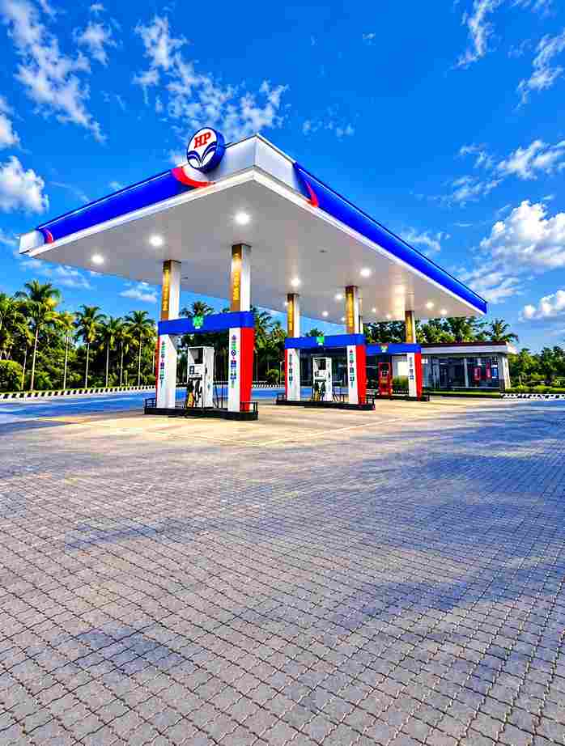
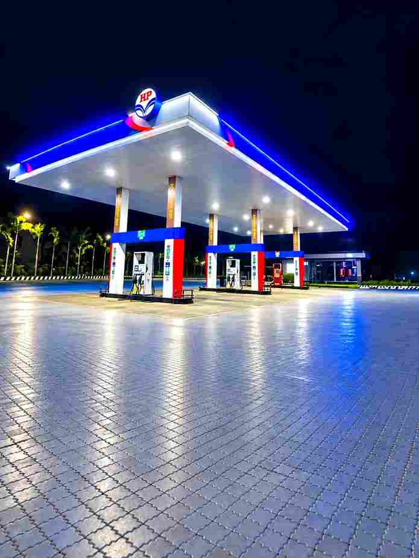

Want to create a realistic and cinematic petrol pump photo using your own picture? With AI photo editing tools, you can now transform a normal photo into an attractive night-time petrol pump scene without complicated editing skills. The right AI prompt can help place you naturally into the background while maintaining your original face, hairstyle, skin tone, clothes, body shape, pose, and proportions. In this article, you will find the best Petrol Pump Night AI Photo Editing Prompt 2026, along with simple instructions and useful tips to create a realistic, sharp, and professional-looking AI photo for social media.
Best Petrol Pump AI Photo Editing Prompt 2026
To create this AI photo edit, use your first image as the exact reference photo of yourself and your second image as the petrol pump background. Upload both images to your preferred AI image editing tool and use the following prompt. The prompt is designed to preserve your original appearance while naturally blending you into the petrol pump environment. It also instructs the AI to match the lighting, shadows, perspective, colors, reflections, and camera quality so that the final image does not look like a simple cut-and-paste edit. You can copy the complete prompt from the next paragraph.
Petrol Pump Backgrounds & Prompts 2026
Save Photo for Background ⬇️


Want more awesome prompts?
Join our community and get the latest viral prompts daily.
Follow on Instagram
How to Create a Petrol Pump AI Photo
To create a realistic Petrol Pump Night AI image, follow the simple instructions below for the best and most natural-looking results.
- Open ChatGPT and upload your clear personal photo.
- Upload a suitable petrol pump background.
- Best petrol pump backgrounds are given in the above para
- Use your photo as the person reference.
- Use the petrol pump image as the background.
- Copy the AI photo editing prompt from this article.
- Paste the prompt into ChatGPT.
- click on create button and wait for a while
- Check the result and save your final AI photo.
Choose the Right Petrol Pump Background
Choosing a suitable background can make a major difference to your final AI photo. Try to select a high-resolution petrol pump image that clearly shows the surroundings and has enough open space for your body to be placed naturally. A night petrol station with bright overhead lights, fuel dispensers, realistic reflections, and a dark surrounding environment can create an attractive cinematic appearance. It is also better if the camera angle of the background is similar to the angle of your original photograph. When the perspective and positioning are compatible, the AI can blend both images more naturally and produce a much more convincing final result.
Keep Your Face and Appearance Consistent
When creating an AI photo, maintaining your original identity is very important. The prompt specifically tells the AI to preserve your face, hairstyle, skin tone, body, clothes, pose, and proportions from the reference image. Using a clear reference photo can further improve consistency and reduce unwanted changes. Avoid using extremely blurry, heavily filtered, or low-resolution photos because the AI may have difficulty reproducing important details. If the first generated result slightly changes your appearance, you can try generating another version using the same prompt and a stronger, clearer reference image.
Tips for Better Petrol Pump AI Photo Editing
For the best results, always start with high-quality images. Your reference photo should be sharp, while the petrol pump background should have enough resolution to support a realistic composite. Try to use photos with compatible camera angles, distances, and lighting conditions. If your reference image is captured from a low angle, choose a background that can accommodate a similar perspective. After generating the image, carefully check the face, hands, fingers, clothing edges, shadows, and overall proportions. If something looks unnatural, regenerate the image instead of accepting the first result. Small differences between generations are normal with AI photo editing.
Petrol Pump Night AI Photo for Instagram
A realistic petrol pump night photo can be a great creative image for Instagram, Facebook, YouTube thumbnails, and other social media platforms. The combination of bright petrol station lights and a dark night background can give your photograph a stylish cinematic appearance. You can experiment with different poses and petrol pump locations while keeping the same basic editing prompt. For Instagram Reels and Stories, you can generate a vertical version, while landscape images can work well for YouTube thumbnails. Make sure your final image remains natural and avoid excessive effects that could make the photograph look unrealistic.
Why Use an AI Photo Editing Prompt?
AI photo editing prompts make complex image manipulation much easier because you can describe the desired result using simple instructions instead of manually performing every editing step. A carefully written prompt tells the AI which elements should remain unchanged and which environmental details should be adjusted. In this case, the prompt focuses on preserving your identity while blending you into a petrol pump night background. Instructions about lighting, shadows, perspective, reflections, colors, and camera quality help create a more natural composition. This makes the prompt useful for beginners as well as people who regularly create AI photos for social media.
Overall
The Petrol Pump Night AI Photo Editing Prompt 2026 provides an easy way to transform your ordinary photo into a realistic night petrol pump scene. By using your own photograph as the person reference and a suitable petrol pump image as the background, you can create a seamless AI photo with natural lighting, realistic shadows, accurate perspective, and cinematic night tones. For the best results, always use clear images and carefully check the generated output for facial details, hands, clothing, proportions, and background blending. Copy the prompt from this article, upload your two images, and start creating your own realistic petrol pump night AI photo.